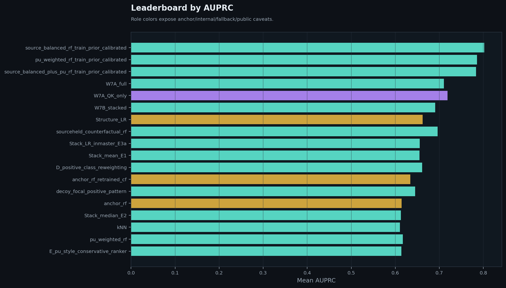
fig01_leaderboard_auprc.png
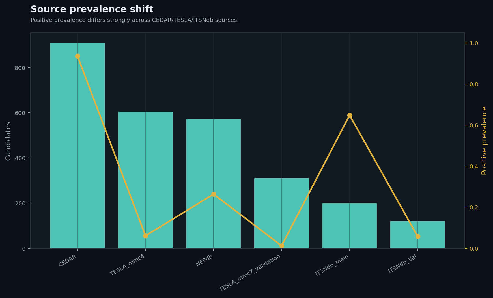
fig02_source_prevalence_shift.png
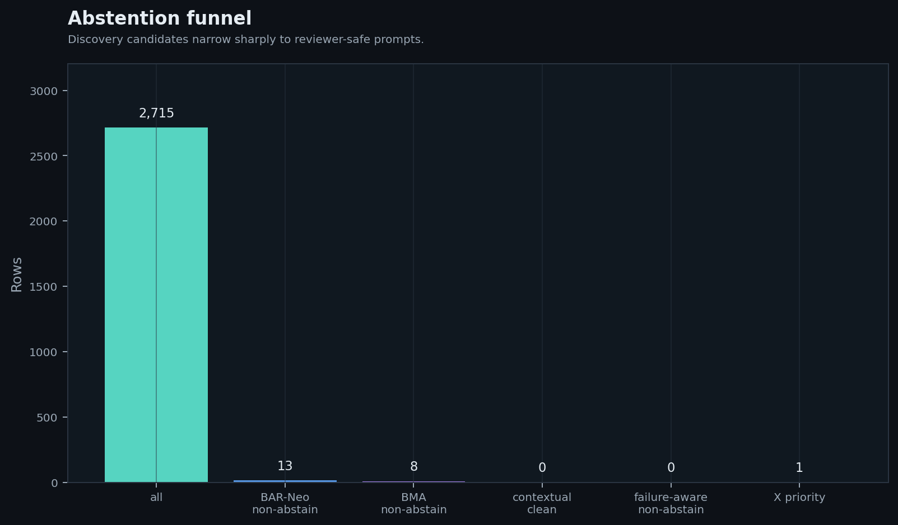
fig03_abstention_funnel.png
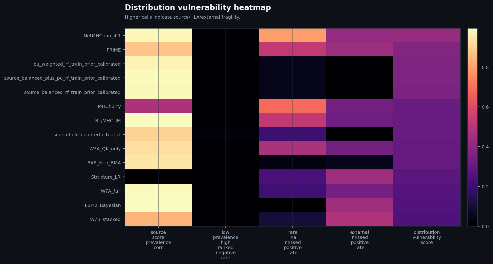
fig04_method_vulnerability_heatmap.png
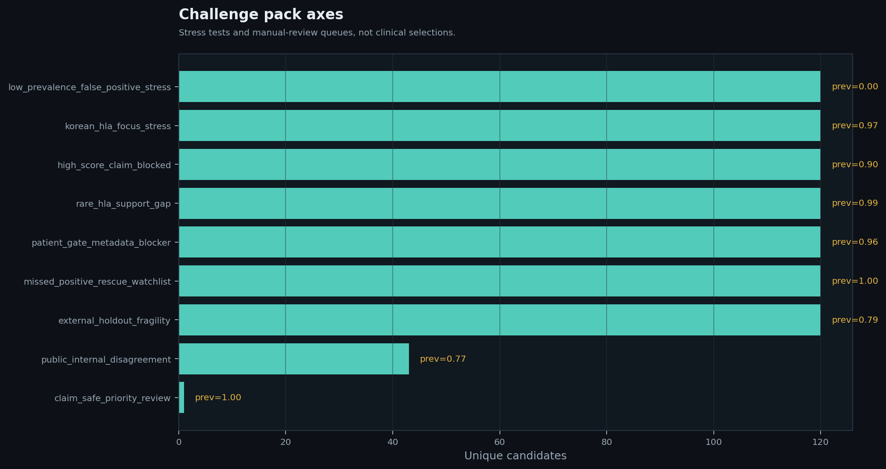
fig05_challenge_axes.png
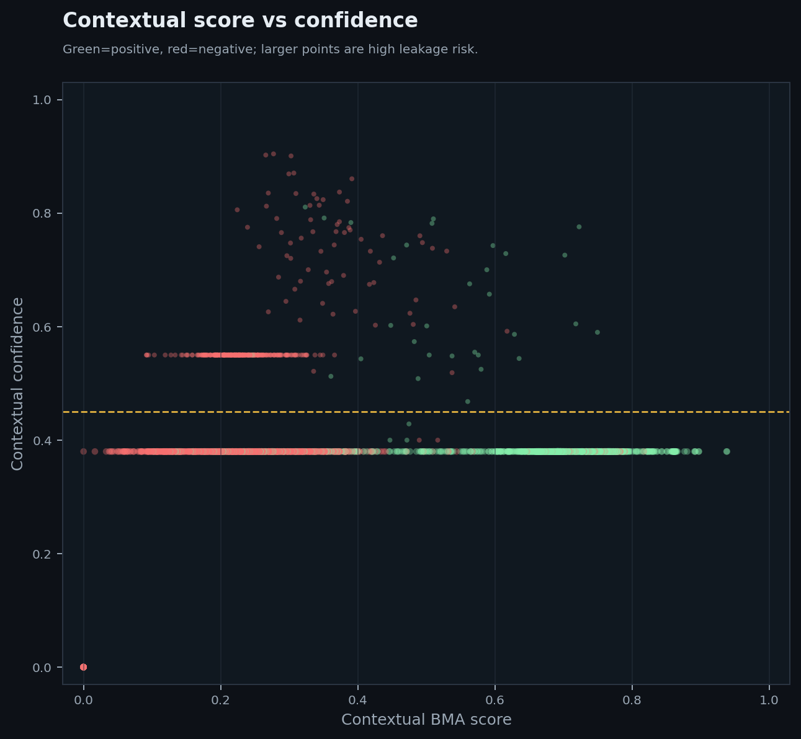
fig06_contextual_score_confidence.png
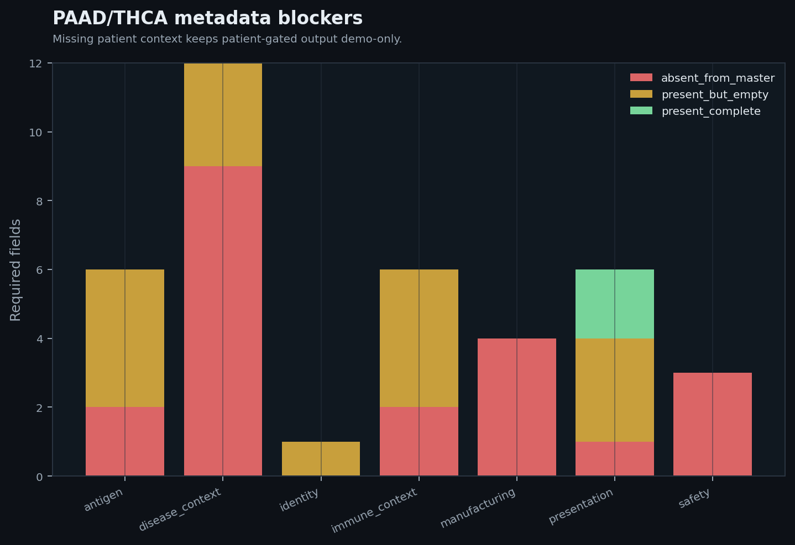
fig07_patient_metadata_blockers.png
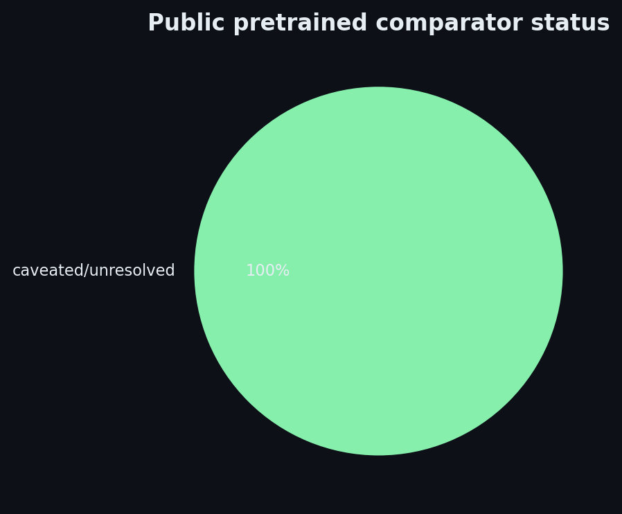
fig08_public_tool_caveat.png
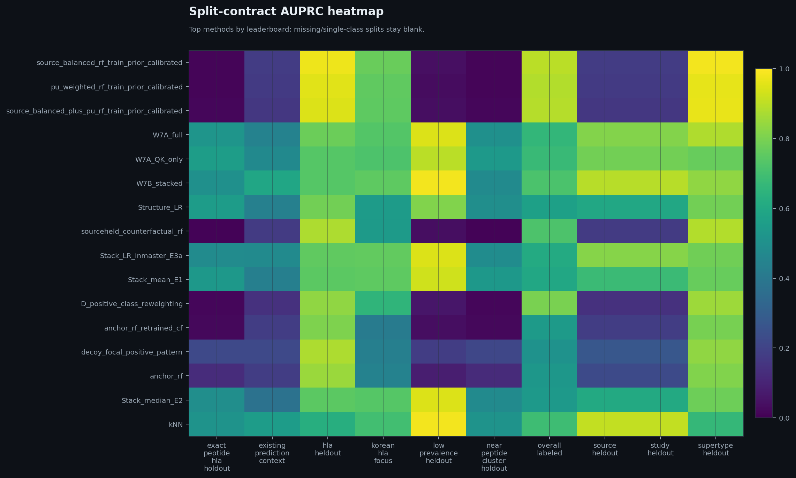
fig09_split_contract_auprc_heatmap.png
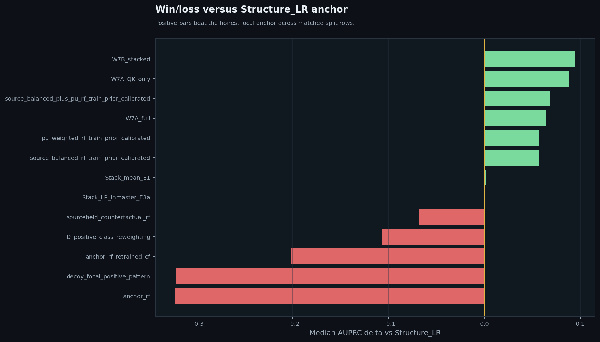
fig10_delta_vs_structure_lr.png
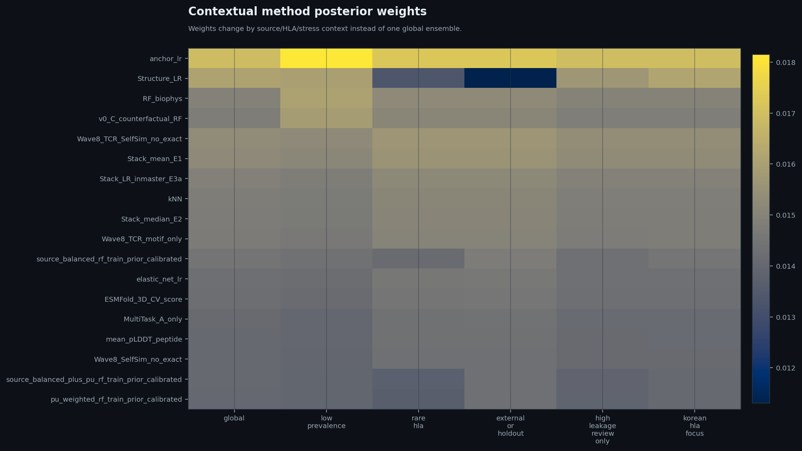
fig11_contextual_method_weights.png
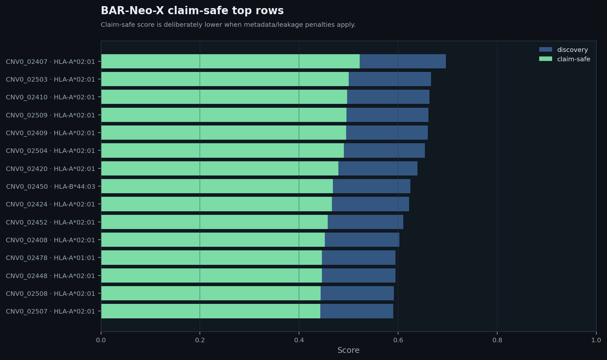
fig12_barneo_x_claim_safe_top.png